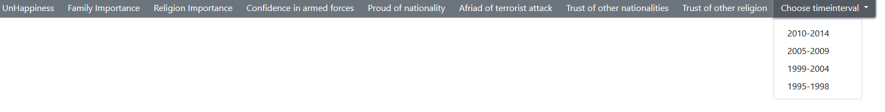
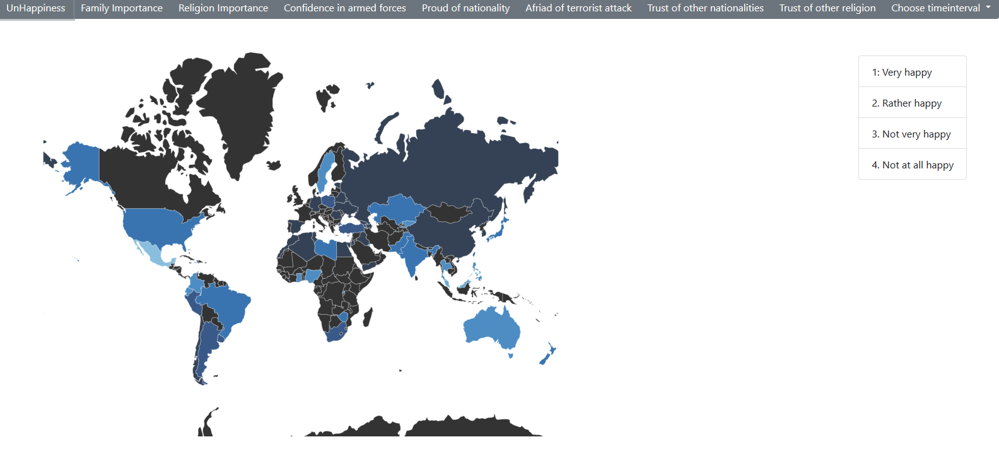
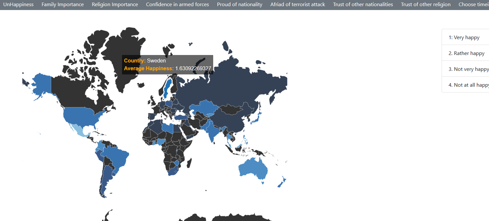
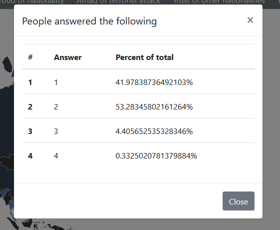
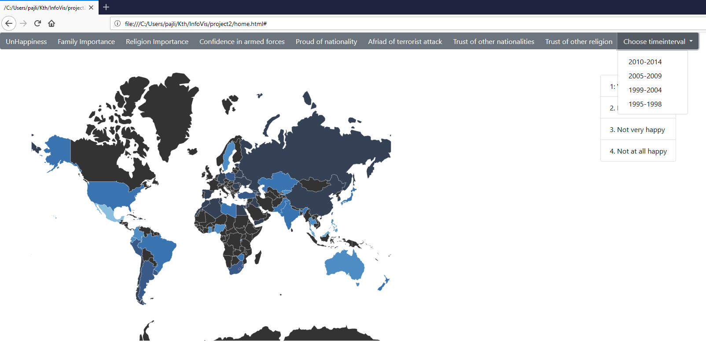
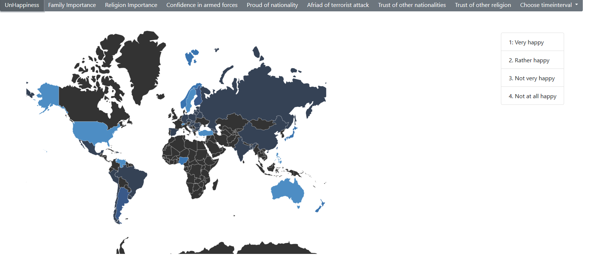
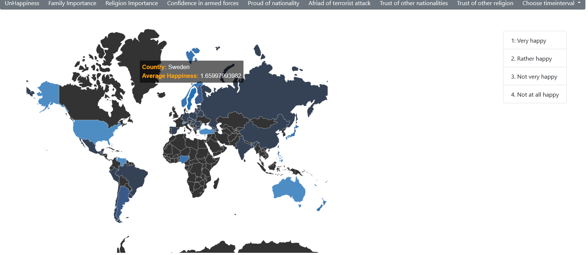

Research question:
How many percent of swedes are very happy today and how many percent were very happy 30 years ago?
Step 1
Want to first choose the most recent wave to get most recent data.
Step 2

Found timeinterval dropdown. Choose most recent wave to get most recent data.
Step 3
Click the button for unhappiness
Step 4

A great world map view appears. Interesting! Lets try and hover over the countries.
Step 5

We can see that Sweden has an average happiness of 1.63.
But i wanted only the very happy ones. What happens if I click the country?
Step 6

A popup appears showing the percentages. Today 42% of the people are vey happy. Pretty good.
Step 7

Now try to remember 42% and go to the oldest data. Once again choose time at timeinterval dropdown.
Step 8

Press the unhappiness button again.
Step 9

Hover over Sweden, the average happiness is slighly worse now.
Step 10
Click on Sweden to open the popup. I can see that 39.7% were very happy at that time. It is around the same as now!
Step 11
Conclude that both average happiness and the amount of people feeling vey happy in Sweden is about the same today as 30 years ago.